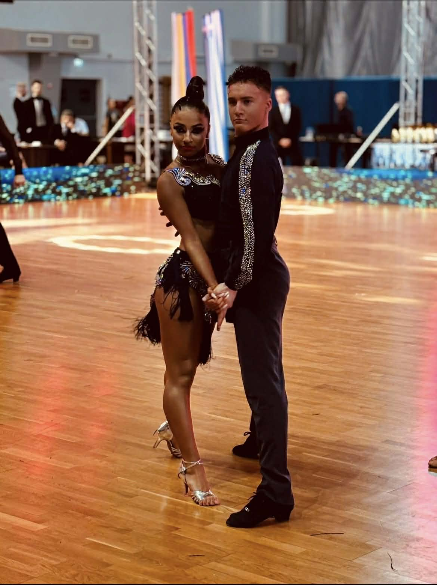

გიორგის და ნიას მოკლე ისტორია

გიორგიმ და ნიამ ერთმანეთი 2015 წელს გაიცნეს და იმავე წელს დადგნენ წყვილად. მას შემდეგ ისინი ერთად აგრძელებენ განვითარებას და წარმატებების მიღწევას სპორტული ცეკვის სამყაროში. გიორგი და ნია არიან ექვსგზის საქართველოს თასის მფლობელები, ოთხგზის კავკასიის ჩემპიონები და ორჯერ საქართველოს ჩემპიონები. ისინი ასევე მაღალი შედეგებით გამოირჩევიან საერთაშორისო არენაზე და მსოფლიო რეიტინგში, ექვსასამდე წყვილს შორის, ოცდამეორე ადგილს იკავებენ. მათი მწვრთნელები არიან თამარ კილეძე და ბესო კრავიშვილი, რომლებმაც გიორგისა და ნიას პროფესიულ განვითარებაში უდიდესი შრომა და გამოცდილება ჩადეს. წლების განმავლობაში გიორგისა და ნიას არაერთი წარმატება აქვთ მიღწეული როგორც ეროვნულ, ისე საერთაშორისო შეჯიბრებებზე. მათ ანგარიშზეა დაახლოებით ორმოცამდე პირველი ადგილი, თორმეტზე მეტი მეორე ადგილი და ათამდე მესამე ადგილი. დღეს გიორგი და ნია საქართველოს ერთ-ერთ წამყვან საცეკვაო წყვილად ითვლებიან და თავიანთ კატეგორიაში საქართველოს რეიტინგში პირველ ადგილს იკავებენ. მათთვის ეს მხოლოდ დასაწყისია. გიორგისა და ნიას წინ დიდი მიზნები აქვთ დასახული და ისინი დაუღალავი ვარჯიშით, მოთმინებითა და შრომით კიდევ უფრო მაღალი მწვერვალების დაპყრობას და საერთაშორისო ასპარეზზე კიდევ უფრო დიდი წარმატებების მიღწევას გეგმავენ.
.jpg)